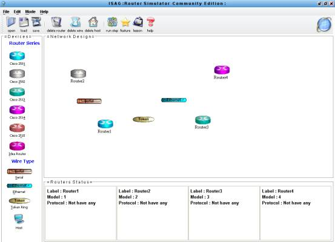
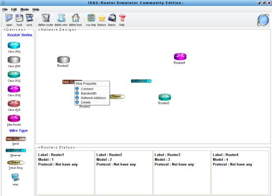
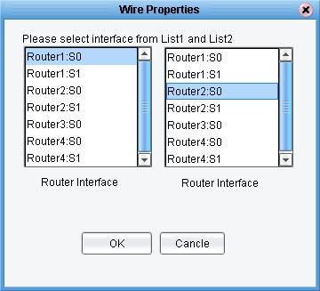
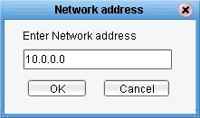
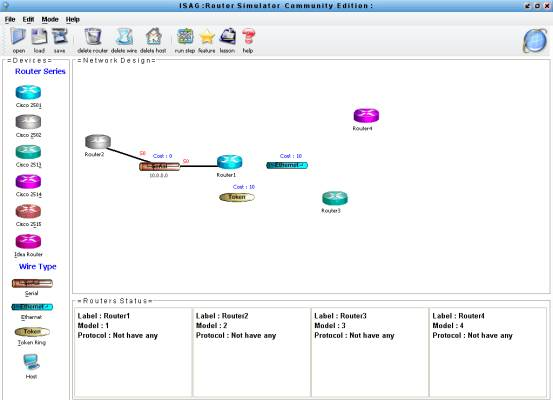

Creating
your network simulation
ตัวอย่างการออกแบบเครือข่าย
เมื่อเปิดโปรแกรมใน Administrator Mode จะได้หน้าจอพร้อมออกแบบ

ทำการสร้างอุปกรณ์ต่างๆจาก Device
ในที่นี้เราสร้างเราเตอร์ รุ่น
2501 2502 2513 2514 อย่างละตัว และสร้าง สายแบบ Serial Ethernet และ Token Ring อย่างละตัว ดังรูป

ทำการเชื่อมต่อสายกับเราเตอร์
โดยคลิ้ก ขวาที่สายและเลือก Connect
อินเทอร์เฟสของเราเตอร์ที่ต้องการต่อ ดังรูป


เลือก อินเทอร์เฟส ของเราเตอร์ที่ต้องการทำเชื่อมต่อในที่นี้จะเลือก
S0 ของ Router1 กับ
S0 ของ Router 2
ทำการกำหนด Network Address ให้กับสาย โดยการคลิ้กขวาที่สาย และเลือก Network Address



ทำการกำหนด Network Address ให้กับสายเพื่อระบุให้เราเตอร์ที่ต่ออยู่ทำการคอนฟิกอย่างไร
จะได้ผลลัพธ์จากการกำหนด Network Address ดังนี้

ทำการเชื่อมต่อสายที่เหลือตามรูปแบบที่ต้องการ

หลังจากออกแบบเครือข่ายดังรูปให้ทำการ
save และสามารถทำการคอนฟิกเราเตอร์ได้
ตามที่ได้ออกแบบไว้ผ่านทาง Router Console โดยสามารถเรียก Console ขึ้นมาด้วยการคลิ้กขวาที่
เราเตอร์
แล้วเลือก Console หรือทำการ Double
Click ที่เราเตอร์เลยก็ได้ดังภาพ


ทำการคอนฟิกค่าต่างๆของเราเตอร์ได้จากหน้าจอ
Console ที่เปิดขึ้นมา